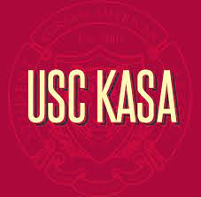

— My Experiences —

Korean American Student Association
Philanthropy Intern
September 2022 - Current
Los Angeles, CA
Facilitate social and fundraiser events to build community and promote
interconnectedness within the organization.
Assisted in hosting large social panels and events that raised nearly $30,000 for the
organization. Developed excel spreadsheets to minimalize spending and
created budgeted outlines.
Korean Business Student Organization
Finance Executive Member
Janurary 2022 - Current
Los Angeles, CA
As part of the financial department of KBSO, I aspired to ensure our
money deposits were stable for social events and for the future of KBSO.
I was also in charge of hosting fundraisers for KBSO by contacting and
partnering with other organizations and collaborating with other
departments to ensure inclusive relationships with the whole organization.
Furthermore, I kept close relations with the other departments to allow for
collaboration and clear communication. Helped raise nearly $6,000 in profitable
funds for the organization
Information Technology Services
Information Technology Analyst
September 2021 - Current
Los Angeles, CA
As an Information Technology Analyst of the USC IT department, it is my
responsibility as the first contact to debug any issues with the USC database
and software that may be affecting the access of faculty, students, and even
non-students to USC servers. Furthermore, it is a principle to attend to the
user's needs, provide exquisite customer service, prevent many issues from
happening to the USC software for future uses, and collaborate with colleagues.
From the experience I had in the industry, I was shifted to an FTE Information
Technology Analyst which carries larger responsibilities as part of the
organization. I was required to explore and fix tougher software issues and
tailor them to customer needs.
Researched and analyzed operations to ascertain detailed client needs.
Debugged issues with the USC software and database for easier UI accessibility.
Maintained a 97% KBS Customer Satisfaction Success Rate and 100% KCS log rate.
Chipotle
Food Line Worker
July 2018 - July 2021
Torrance, CA
Working at chipotle, I provided exceptional customer service to all customers.
I ensured that each customer would be fully satisfied with their experience at
Chipotle. I also lead my other colleagues as the head of the line shift in order
to make sure production was running smoothly and efficiently. Accommodated to a
variety of customers' dietary and nutritional restrictions to ensure each customer
is safe from any possible hazards.

SFKCC
Korean Language Teacher
September 2017 - September 2020
Gardena, CA
Taught 12 to 15 inspiring kids weekly. Personally organized and created lesson
plans weekly from given resources available. Based on the student's personal
needs, I assisted them by providing private tutoring sessions in order to ensure
a quality learning experience. Furthermore, I ensured to develop an open work
environment for collaboration and relationship development amongst the students.